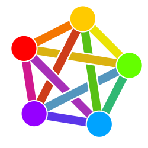

I initially set up this website/blog again because I really want to try and fall back in love with the internet—bizarre, I know! The internet has definitely lost something over the years: its charm. You don’t really see quaint little spaces anymore. It’s all just gambling, adult content, boomers shouting about imaginary crises, and AI slop. The number of worldwide outages that occur because some faceless person in an organisation pressed the wrong button or didn’t debug something correctly—the World Wide Web is far too brittle.
This feels similar to our global supply chains: cutting all corners and costs until you’re left with the bare bones, lots of money going to the few but on the back of the content we create. I’ve been on a journey over the past six months or so to consciously decouple myself from as much “big tech” as possible. I started by moving to Linux. I use Linux Mint and honestly, it hasn’t really been all that painful. I can still do 90% of what I did before. The other 10% were only really rare use cases anyway, so it isn’t a loss. I then started looking at open-source or smaller platforms and applications. So, rather than using Google Keyboard, I’m using Futo. Instead of Outlook, I’m using Posteo. I use Listenbrainz and Libre.FM to record most of my music habits. I’ve been using the likes of Libre Office and Audacity for some time. Anyway, I didn’t really intend this to be a listicle. Wow, 10 greatest must-have apps on SlopMOJO!!!
I’ve also dipped my toe into the Fediverse. I kind of did so unknowingly before with with Mastodon, when I had that for five minutes after leaving Twitter a few years ago..The Fediverse, is "a decentralised, open-source network of independent social media servers that communicate with each other using shared protocols like ActivityPub," according to Wikipedia.

There are decentralised versions of sites like Reddit, Instagram, and Discord—and I mean “like” because it’s the user base that makes the platform, not the technology. You can cross-post between some platforms, so there isn’t the same need to have passwords up to your eyeballs. No single site controls all the information. There are also instances. This is where you create your own version of Piefed or Lemmy and use it for your own ends. So you could have a discussion forum specifically for your school or college, rather than piggybacking off another space and their terms and conditions. This makes you totally liable for the content you post on your instance. While others can’t remove you or your instance, they can remove you from the Federation, but the key is they can’t take your instance away from you.
The big takeaway for me is that ActivityPub is an open standard not linked to any one hardware or software platform; services like Mastodon and Lemmy are open-source. They are decentralised and not controlled by an algorithm, and the moderation is dependent on the instance you’re in. Looking at the services, they aren’t filled with conspiracy theorists, etc.; it just seems to be your average person who is done with traditional social media or uses it as part of their social media diet alongside Reddit or X.
For my part—when it comes to ownership—I’ve been taking the time to buy old secondhand DVD box sets of TV shows or film franchises. I bought the Godfather trilogy for £4, which is just wild to me! The idea is that I can have more of the shows I watch over and over again close to hand, so I’m not relying on streaming services. I’ve been trying to make a conscious effort to read more. I moved mostly over to Kobo before Amazon locked the ability to download the books you purchased. I prefer reading from an e-reader because it makes me feel less anxious about the whole thing. You can still download your ebooks from Kobo’s desktop site, albeit I’ve definitely become part of the Tsundoku phenomenon—it has actually become a blessing. I prefer ebooks these days. Even audiobooks, I've taken to purchasing them from Libro.fm admittedly usually when a book is on offer—their files are DRM-free. I love music and I’ll do what I can to own the stuff I really enjoy, whether that’s on Bandcamp or other platforms. I’m all in on owning digital copies of albums, but I’ll happily spring for a physical copy too. Like recently, I purchased a physical copy of the FEX album Skyscraper—you don’t get to have the most mysterious song on the internet and get away with it after all!